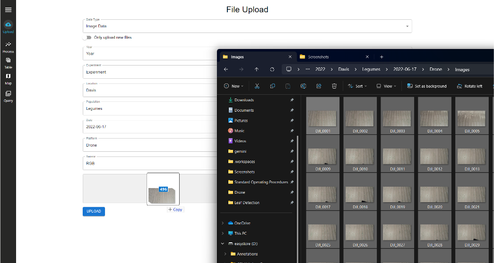
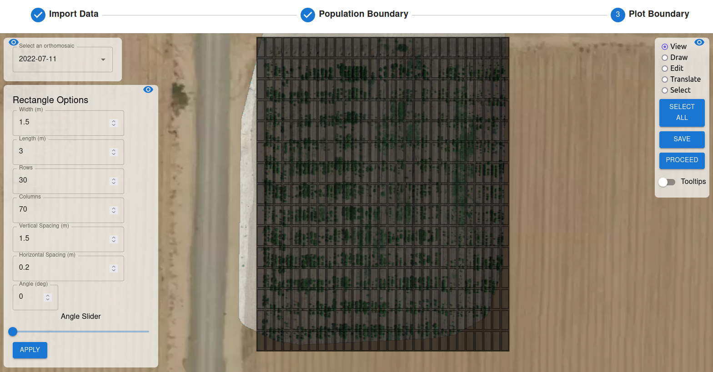

Drone Data Processing
Upload Data
To navigate to the file upload page, click on the Upload Icon.
Data Types
Image Data: This is the raw image files taken from the sensing platforms. These group of images should be coming from an individual sensor. Some image types include: jpg, jpeg, png or tif. If your images do not contain EXIF metadata, you will need to upload a separate file called msgs_synced.csv under the data type Platform Logs.
GCP Locations: This is a csv file containing locations of GCPs. The first column should contain the label, the second column contains latitude and the third column contains longitude.
Example GCP Locations

Platform Logs:
If you are missing EXIF metadata in your images, you need to upload a separate file and name it msgs_synced.csv under this datatype. This file should contain these columns:
image_path: This contains the name of the image (image_0000.jpg). The full path will be built after uploading the final file.time: Date and time when the image is taken (YYYY:MM:DD HH:MM:SS)lat: Latitude in decimal degreeslon: Longitude in decimal degreesalt: Altitude in meters
Example msgs_synced.csv file
You can also upload drone logs into this datatype. You can check the Drone Operation Manual section for more information.
Data Fields
Year: This is the year YYYY the data was collected. It is a required field. For example, 2022 is a valid year.
Experiment: This is open for the user to decide. This will differentiate experiments for a single year. For example, Experiment 1 is a valid experiment.
Location: This is the location where the data was collected. For example, Davis is a valid location.
Population: This is the type of plants you will be analyzing. For example, Legumes is a valid population.
Date: This is the date YYYY-MM-DD the data was collected. It is a required field. For example, 2022-06-20 is a valid date.
Platform: This is the sensing platform used to collect the data. For example, Drone is a valid platform.
Sensor: This is the data type collected. For example, RGB or Thermal are valid sensors.
Upload Files
- Choose the
Data Typeyou want to upload. - Fill in the respective fields.
- Drag and drop your files in the upload region.

Video Demonstration
Manage Files
Data Table
- Navigate to the
Manage Filestab to view uploaded data and prepare for processing. - Hover over any of the action buttons in the
Actionscolumn to see their function.
Orthomosaic Generation
To navigate to the image processing page, click on the Process Icon. Use the icon with three lines to open and close the data selection menu.
OpenDroneMap
- NOTE: To maximize orthomosaic output resolution, upload a gcp_locations.csv file in the
Uploadtab. - You can also upload the GCP file right after selecting
Startin the dropdown. - Under the
Orthomosaic Methoddropdown, select OpenDroneMap. This is recommended for Aerial data with vertical and horizontal overlap. - After uploading image files to the app, orthomosaic generation can be performed.
- Expand the dropdown menu of the correct platform and sensor type to select the date to perform generation on.
- Click the
Startbutton to open the orthomosaic generation window. Use thePreviousandNextbuttons or the selection bar to iterate through images to mark all visible ground control points (GCPs) if a GCP Locations file was uploaded. If a GCP is placed in error, points can be removed by right-clicking. - When ready to proceed, click
Generate Orthophoto. In the settings dropdown, select the orthophoto quality. TheCustomoption can be used with OpenDroneMap args if more specific settings are needed. The default setting attempts to use a GSD (Ground Sampling Distance) of 0.01 cm/pixel. Use the Custom option to input specific GSD values if desired. - After selecting the quality level, click
Process Images. - Follow the progress of orthomosaic generation by observing the progress bar at the bottom of the page. Progress can also be monitored via the logs, which can be opened using the arrow on the right side of the progress bar.
- Processing may take up to 2 hours with large image datasets. To decrease processing time, use the
Customsetting with an increasedorthophoto-resolutionflag. For example, theCustomsetting with--orthophoto-resolution 1.0would decrease processing time by a large amount. - If any issues are seen with the output orthophoto using the viewer in the
Manage Orthomosaicswindow, check theGEMINI-App-Data/temp/project/code/odm_report/report.pdffile for more details on the issues / GCP errors encountered during processing.
Plot Boundary Preparation
Import Data
- After ortho generation is finished, the plot boundary is prepared before further processing.
- First, input a field_design.csv file in the requested format:
Example Field Design

- After uploading, verify that the preview of your data looks correct. If your file has column headers, leave the
Data has headersbox checked. ClickChoose columns.

- Drag and drop the columns into the appropriate headers used by the app. Navigate through the columns using the left / right arrows. Click
Importonce all required fields are filled. If columns have titles that exactly match those used by the app, the app's field will be filled automatically.
Population Boundary
- After importing data, select the date of the data processing will be done on from the dropdown. Navigate to the location of the orthomosaic in the map.
- Choose the
Drawoption on the right of the screen. Click along the outer perimeter of the portion of the orthomosaic you'd like to process. Use theEdit,Translate, andSelectoptions to modify the boundary as needed. When finished, clickSave. - Click
Proceedto continue to the Plot Boundary.
Plot Boundary
- NOTE: ALL PLOTS with plot boundaries created must be included in Field Design file even if the plots aren’t being used in the field. Without their inclusion, mapping of accession information will be incorrect.
- Select the orthomosaic once more from the dropdown menu. Click the icon at the bottom left to populate parameters for the plot boundaries.
- Adjust the parameters until you are satisfied with the plot boundaries for trait extraction.
- Use the options in the top right to modify the placement of individual rectangles, or all at once using
Select All. - When finished, click
Save. 
Trait Extraction
- After preparing the plot boundary, aerial traits can be processed.
- To process traits, click
Starton the appropriate date's traits column. ClickAnalyzeto begin processing. - If traits need to be processed more than once, click on the blue checkbox and click
Analyzeagain. - In the future, the Teach Traits tab will allow for use of trainable aerial models.
Trait Viewing
To navigate to the statistics page, click on the Stats Icon. Use the icon with three lines to open and close the data selection menu.
- The stats page shows processed data in tabular and graphical formats.
- To see statistics from a given date, expand the dropdown menu of the proper platform and sensor type.
-
Click Load on the date's table or graph column to view the extracted trait data.
-
For the tabular format, you will see a window showing the table of traits. If desired, Download CSV can be clicked for the table as a CSV file.

- For the graphical format, you will see a window showing a bar graph representing the number of plots that fell within certain ranges for the currently selected trait.
- To view the graph of a different trait, change the selected trait at the top of the window.
- To view the distribution of a certain accession value (as populated in the uploaded field design file), use the dropdown menu to select a different accession. To view the distribution of all accessions, leave the accession as None.
- To save the current graph view as an image, click Save As Image in the bottom left corner.
To navigate to the map page, click on the Map Icon. Use the icon with three lines to open and close the data selection menu.
- Populate the data selection menu with the
Year,Experiment,Location,Population,Date,Platform, andSensoryou wish to view. - The map will automatically adjust to show the full orthomosaic generated for the parameters selected.
- Use the dropdown menu to select the
Trait Metricto view. After selecting, use the next dropdown menu to select theGenotypeto view. - The rectangles formed in the population boundary step will show a range of colors based on the trait selected. Use the key at the bottom of the map to interpret the colors shown.

{kind=link}
{kind=link}
{kind=link}
{kind=link}
{kind=link}
{kind=link}
{kind=link}
{kind=link}
{kind=link}
Query
To navigate to the query page, click on the Query Icon. Use the icon with three lines to open and close the data selection menu.
- After selecting
Year,Experiment,Location, andPopulationin the data selection menu, populate theDate,Platform, andSensordropdowns to select the data to query. - There are three options for image query available, with only one being used at a time:
- Plot Numbers: Select from the dropdown menu the plot numbers whose images are to be queried.
- Accessions: Select the unique accession IDs of the images to be queried.
- Row / Column Pairs: Input Row / Column pairs (R, C) to select the images to be queried.
- Click
View Imagesto see the selected images to the right of the dropdown menus. ClickDownloadto download the selected images as a .zip file. - Images shown on the page can be hovered over to see the unique accession ID and plot number of each.
{kind=link}